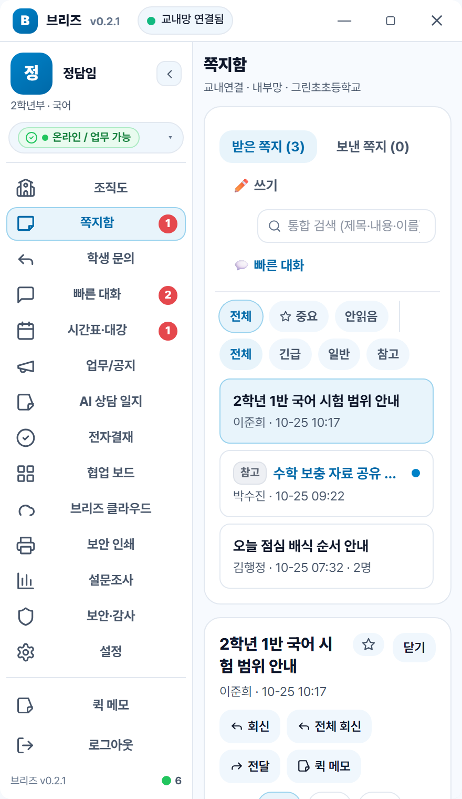

선생님의 380px 데스크톱
작은 창에 필요한 것만 담았어요. 시스템 트레이에 상주하고, 쪽지는 이메일형으로 길게 써요. Enter는 줄바꿈, 보내기는 마우스 버튼으로만.
PC 데스크톱 전용선생님은 380px 데스크톱 앱으로, 학생은 설치 없이 브라우저로 접속해요. 쪽지·학생 문의·시간표·공지·보안 기록을 교내 서버에서 관리해요.

한 화면에서 처리하고, 기록은 학교 서버에 남겨요.
작은 창에 필요한 것만 담았어요. 시스템 트레이에 상주하고, 쪽지는 이메일형으로 길게 써요. Enter는 줄바꿈, 보내기는 마우스 버튼으로만.
PC 데스크톱 전용크롬북에서 학교 코드와 학번으로 로그인해요. 선생님께 쪽지를 보내고, 답장은 교사 앱에 실시간으로 도착해요.
/student · 반응형 웹Express와 SQLite로 학교 PC에서 바로 돌아가요. 관리자 콘솔에서 계정·정책·백업·업데이트를 한 곳에서 관리해요.
BreezeCore Server안 읽은 학생 메시지, 오늘 할 일, 다가오는 일정은 물론 점심시간이 가까워지면 오늘의 급식 메뉴까지 먼저 보여줘요.
스마트 배너듀얼망 학교만 내부망·외부망을 전환해요. 외부망에서는 클라우드 같은 내부망 전용 기능을 숨기고, 열려 있으면 중앙 안내로 멈춰요.
듀얼망 안전 전환누가·언제·어떤 기능을 썼는지 서버 컴퓨터의 활동 로그에 한 줄씩 남겨요. 비밀번호와 쪽지 본문은 기록하지 않아요.
activity-YYYY-MM-DD.log안 읽은 학생 문의, 오늘 수업, 제출 마감, 급식 시간을 한 장의 배너에 정리해요.
안 읽은 학생 문의와 오늘 일정, 아직 끝내지 못한 할 일을 한 장의 배너로 정리해요. 화살표로 넘기면 필요한 것만 빠르게 확인할 수 있어요.
주민등록번호·휴대폰·카드번호 같은 패턴을 먼저 살펴요. 위험한 내용은 감사 기록과 함께 멈춰요.
시험지와 성적표는 바로 출력되지 않아요. 인쇄실에서 승인한 순간에만 종이로 나가요.
학생은 선생님에게만 쪽지를 보내요. 관리자·교사·학생 권한을 나누고, 비밀번호를 바꾸면 다른 기기 세션을 끊어요.
API 요청과 주요 화면 행동을 날짜별 텍스트 파일로 남겨요. 비밀번호·토큰·쪽지 본문은 남기지 않아요.
외부 클라우드 계정 없이 교내 PC와 내부망만으로 준비해요.
교내 PC에 서버를 설치하고 관리자 계정과 이용권을 등록해요. 데이터와 업로드 파일은 학교 폴더에 쌓여요.
관리자 콘솔에서 학교 코드를 정하고, 엑셀로 교사·학생 계정을 등록해요. 비워 둔 비밀번호는 임시 비밀번호로 안전하게 발급해요.
선생님은 PC 앱을 설치하고, 학생은 같은 서버 주소의 /student로 접속해요. 같은 학교 코드로 쪽지와 알림을 주고받아요.
처음 도입한다면 체험용 라이선스로 학교 PC 한 대에서 기능을 먼저 확인해 보세요. 실제 운영 전에 계정·권한·백업 위치를 정해 두면 좋아요.
핵심 메신저 기능은 교내 서버와 내부망만으로 동작해요. 다만 나이스 급식·일정 연동이나 AI 요약처럼 외부 API를 쓰는 기능은 학교 설정과 인터넷 연결이 필요해요.
아니요. 학생은 크롬북이나 PC 브라우저에서 서버 주소의 /student로 접속하면 돼요. 학교 코드·학번·비밀번호로 로그인해요.
아니요. 브리즈코어의 쪽지는 이메일형이에요. Enter는 줄바꿈만 하고, 보내기는 마우스로 [보내기]를 눌러야 해요. 보낸 뒤 7초 동안은 취소할 수 있어요.
현재 브리즈 클라우드는 선생님 PC의 브라우저 저장소(IndexedDB)에 저장돼요. 학교 서버나 외부 클라우드로 자동 동기화되지 않으므로, 다른 PC와 나누려면 파일을 내려받아 쪽지나 공용 자료로 전달해 주세요.
네. 단일망 학교에서는 내부망·외부망 전환 버튼이 보이지 않아요. 듀얼망 학교에서만 외부망 전환과 내부망 전용 기능 잠금이 동작해요.
서버 한 대와 학교 코드 하나면 시작할 수 있어요. 계정과 권한, 백업 위치는 도입 전에 정해요.